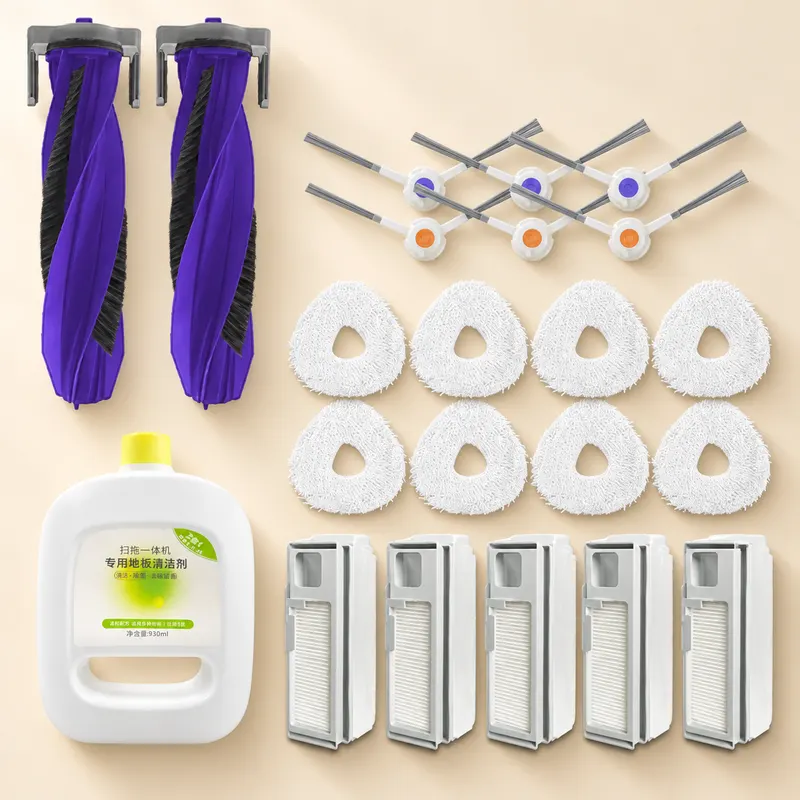

나르왈 (Narwal)
나르왈 프레오 X 울트라 vs Z 울트라 소모품 차이 비교와 X 울트라 1년 세트
글·구성: 제이상점 · 기종별 소모품 규격 요약본 (상세 사진과 관리 전문은 아래 네이버 블로그 모바일 원문에서 확인하실 수 있습니다.)

핵심 관리 · 선택 체크포인트
- 나르왈 프레오 X 울트라와 프레오 Z 울트라는 둘 다
- 한쪽이 열린 원추형 제로탱글 브러시와 삼각 물걸레 패드 점검: 프레오 X 울트라는 한쪽 끝이 고정되고 반대쪽 끝으로 머리카락이 미끄러져 빠져나가는 원추형 플로팅 브러시를 최초로 적용한 모델입니다.
- 나르왈 프레오 X 울트라 vs 프레오 Z 울트라 소모품 규격 비교표: 주문 전 보유 모델이 프레오 X 울트라인지 아래 표로 먼저 확인해 보세요.
- 상세페이지에서 나르왈 프레오 X 울트라 전용 1년 패키지 옵션을 확인해 선택하실 수 있습니다.
- 세탁실 카운터 매트 점검과 원목 서랍·보관함 분리 수납: 세척한 삼각 물걸레 패드와 필터는 세탁실 매트나 베란다
부품 규격 · 점검 기준표
| 비교 항목 | 프레오 X 울트라 규격 | 점검 및 교체 포인트 |
|---|---|---|
| 원추형 플로팅 메인브러시 | 한쪽 끝이 열린 스파이럴 고무·솔 브러시 | 머리카락 유도 끝단 점검 및 솔 마모 시 새 브러시 교체 |
| 둥근 삼각형 물걸레 패드 | 삼각 센터홀 도톰한 화이트 극세사 패드 | 세척 후 통풍 매트에서 완전 건조하며 예비 패드와 2매 동시 교대 |
| 전용 더스트백·헤파필터 | 프레오 X 울트라 본체 규격 더스트백 + 전용 필터 | Z 울트라 스테이션 봉투와 다르므로 X 울트라 전용 옵션 선택 |
자주 묻는 질문 (FAQ)
Q. 나르왈1년세트의 원추형 플로팅 메인브러시 규격과 관리 기준은 무엇인가요?
A. 한쪽 끝이 열린 스파이럴 고무·솔 브러시 규격을 사용하며, 머리카락 유도 끝단 점검 및 솔 마모 시 새 브러시 교체 기준으로 점검·교체하면 청소 효율을 안정적으로 유지할 수 있습니다.
Q. 나르왈1년세트의 둥근 삼각형 물걸레 패드 규격과 관리 기준은 무엇인가요?
A. 삼각 센터홀 도톰한 화이트 극세사 패드 규격을 사용하며, 세척 후 통풍 매트에서 완전 건조하며 예비 패드와 2매 동시 교대 기준으로 점검·교체하면 청소 효율을 안정적으로 유지할 수 있습니다.
Q. 나르왈1년세트의 전용 더스트백·헤파필터 규격과 관리 기준은 무엇인가요?
A. 프레오 X 울트라 본체 규격 더스트백 + 전용 필터 규격을 사용하며, Z 울트라 스테이션 봉투와 다르므로 X 울트라 전용 옵션 선택 기준으로 점검·교체하면 청소 효율을 안정적으로 유지할 수 있습니다.